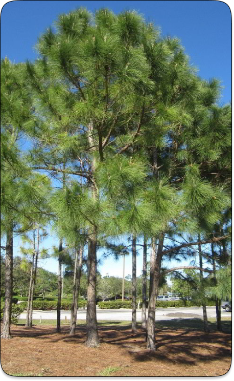
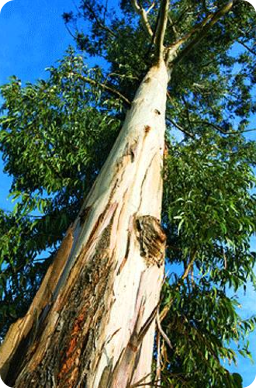
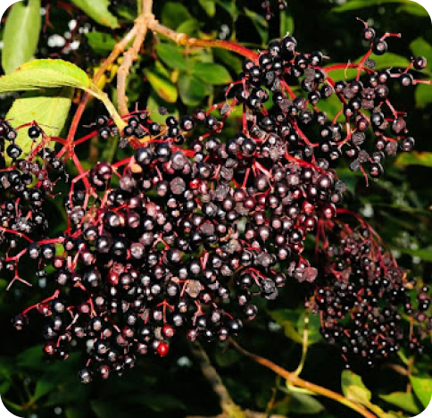
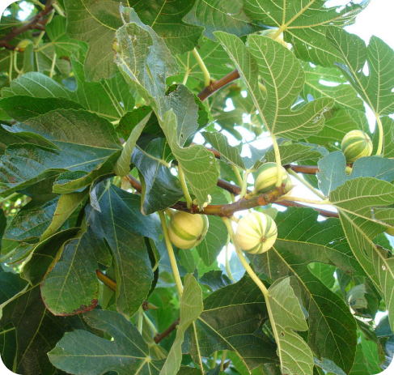
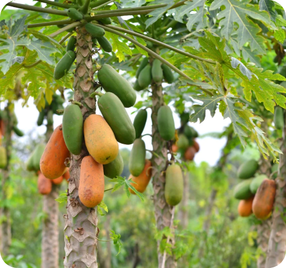

⌂ Esse site é designado as pessoas que buscam aprender as melhores maneiras de tratar,
plantar, colher e manter vivas e saudaveis as suas árvores de dos mais variados tipos...
Tipos de arvores que nós tratamos:
PINUS
EUCALIPTUS
ACÁCIA
ÁRVORES FRUTÍFERAS
Sabugueiro
Figueiro
Mamoeiro

■ PINUS
Preparação para o Plantio:
Escolha da Espécie: Escolha a espécie de Pinus adequada ao clima e solo da sua região. Algumas das espécies mais comuns incluem Pinus elliottii (pinheiro-de-elliott), Pinus taeda (pinheiro-do-taeda) e Pinus pinea (pinheiro-manso).
Localização: Selecione um local com boa drenagem e que receba bastante luz solar. Os Pinus preferem solos arenosos e bem drenados, mas podem tolerar solos mais pobres.
Preparação do Solo: Prepare o solo limpando a área de ervas daninhas e pedras. Pode ser útil adicionar matéria orgânica ao solo para melhorar a estrutura e a fertilidade.
Plantio:
Obtenção das Mudas: Você pode adquirir mudas em viveiros especializados ou optar por plantar a partir de sementes, embora isso demore mais
Plantio das Mudas: Cave um buraco de tamanho adequado para a raiz da muda (aproximadamente duas vezes o tamanho da raiz). Coloque a muda no buraco, preenchendo com solo e compactando suavemente ao redor da base. Certifique-se de que a raiz esteja totalmente coberta e que a muda esteja firme.
Espaçamento: Plante as mudas com espaço suficiente entre elas para permitir o crescimento das árvores sem competição excessiva por nutrientes e luz. O espaçamento ideal varia com a espécie, mas geralmente é de 3 a 4 metros.
Cuidados Pós-Plantio:
Rega: As mudas recém-plantadas devem ser regadas regularmente até que estejam bem estabelecidas. Evite encharcar o solo, mas mantenha-o úmido.
Controle de Ervas Daninhas: Mantenha a área ao redor das mudas livre de ervas daninhas, que podem competir por nutrientes e água. A aplicação de uma camada de mulch pode ajudar a suprimir as ervas daninhas e conservar a umidade do solo.
Fertilização: Após o primeiro ano, você pode aplicar fertilizantes de liberação lenta para ajudar no crescimento. Utilize um fertilizante balanceado específico para coníferas.
Proteção contra Pragas e Doenças: Monitore regularmente suas árvores para sinais de pragas e doenças. Alguns problemas comuns incluem insetos perfuradores e fungos. Se necessário, utilize produtos apropriados para controlar essas ameaças.
Manutenção a Longo Prazo:
Poda: A poda geralmente não é necessária para Pinus, exceto para remover galhos mortos ou danificados. Se precisar controlar o formato da árvore, faça podas leves.
Irrigação: Após os primeiros anos, as árvores estabelecidas normalmente não precisam de irrigação suplementar, exceto em períodos de seca extrema.
Monitoramento: Continue monitorando suas árvores para garantir que estejam saudáveis. A detecção precoce de problemas pode evitar perdas significativas.
Colheita:
Para aqueles interessados em plantar Pinus para a produção de madeira, é importante seguir práticas de manejo florestal sustentável, incluindo o planejamento de colheitas e a replantação adequada.

■ EUCALIPTO
Preparação para o Plantio:
Escolha da Espécie: Existem muitas espécies de eucalipto, cada uma com características e requisitos diferentes. Algumas das espécies mais comuns incluem Eucalyptus grandis, Eucalyptus citriodora e Eucalyptus globulus. Escolha a espécie que melhor se adapta ao clima e solo da sua região.
Localização: Escolha um local que receba bastante luz solar. Eucaliptos preferem solos bem drenados, mas são bastante adaptáveis a diferentes tipos de solo.
Preparação do Solo: Prepare o solo limpando a área de ervas daninhas e pedras. Pode ser útil realizar uma análise de solo para ajustar o pH e adicionar nutrientes necessários.
Plantio:
Obtenção das Mudas: Adquira mudas de eucalipto de viveiros confiáveis. Alternativamente, você pode cultivar a partir de sementes, mas isso levará mais tempo.
Plantio das Mudas: Cave um buraco de tamanho adequado para a raiz da muda (aproximadamente duas vezes o tamanho da raiz). Coloque a muda no buraco, preenchendo com solo e compactando suavemente ao redor da base. Certifique-se de que a raiz esteja totalmente coberta e que a muda esteja firme.
Espaçamento: Plante as mudas com espaço suficiente entre elas. O espaçamento ideal varia com a espécie e o uso final (madeira, óleo essencial, etc.), mas geralmente é de 2 a 3 metros.
Cuidados Pós-Plantio:
Rega: As mudas recém-plantadas devem ser regadas regularmente até que estejam bem estabelecidas. Evite encharcar o solo, mas mantenha-o úmido.
Controle de Ervas Daninhas: Mantenha a área ao redor das mudas livre de ervas daninhas. Uma camada de mulch pode ajudar a suprimir as ervas daninhas e conservar a umidade do solo.
Fertilização: Após o primeiro ano, você pode aplicar fertilizantes de liberação lenta para ajudar no crescimento. Utilize um fertilizante balanceado específico para eucaliptos.
Proteção contra Pragas e Doenças: Monitore regularmente suas árvores para sinais de pragas e doenças. Eucaliptos podem ser suscetíveis a insetos como o besouro do eucalipto e doenças fúngicas. Utilize produtos apropriados para controlar essas ameaças se necessário.
Manutenção a Longo Prazo:
Poda: A poda não é geralmente necessária para eucaliptos, exceto para remover galhos mortos ou danificados e para controlar o formato da árvore se necessário.
Irrigação: Após os primeiros anos, as árvores estabelecidas normalmente não precisam de irrigação suplementar, exceto em períodos de seca extrema.
Monitoramento: Continue monitorando suas árvores para garantir que estejam saudáveis. A detecção precoce de problemas pode evitar perdas significativas.
Colheita:
Para aqueles interessados em plantar eucaliptos para a produção de madeira ou óleo essencial, é importante seguir práticas de manejo florestal sustentável, incluindo o planejamento de colheitas e a replantação adequada.
■ ACÁCIA
Preparação para o Plantio:
Escolha da Espécie: Existem muitas espécies de acácia, cada uma com características diferentes. Algumas das mais comuns incluem Acacia mangium, Acacia dealbata (mimosa) e Acacia melanoxylon (acácia-negra). Escolha a espécie que melhor se adapta ao clima e solo da sua região.
Localização: Escolha um local com boa exposição ao sol. Acácias preferem solos bem drenados e podem tolerar solos pobres e arenosos.
Preparação do Solo: Prepare o solo limpando a área de ervas daninhas e detritos. Pode ser útil adicionar matéria orgânica ao solo para melhorar a estrutura e a fertilidade.
Plantio:
Obtenção das Mudas: Adquira mudas de acácia de viveiros confiáveis ou cultive a partir de sementes. Para germinar sementes, algumas espécies requerem escarificação (danificar a casca da semente) ou imersão em água quente por 24 horas para quebrar a dormência.
Plantio das Mudas: Cave um buraco de tamanho adequado para a raiz da muda (aproximadamente duas vezes o tamanho da raiz). Coloque a muda no buraco, preenchendo com solo e compactando suavemente ao redor da base. Certifique-se de que a raiz esteja totalmente coberta e que a muda esteja firme.
Espaçamento: Plante as mudas com espaço suficiente entre elas. O espaçamento ideal varia com a espécie e o uso final, mas geralmente é de 3 a 4 metros.
Cuidados Pós-Plantio:
Rega: As mudas recém-plantadas devem ser regadas regularmente até que estejam bem estabelecidas. Evite encharcar o solo, mas mantenha-o úmido.
Controle de Ervas Daninhas: Mantenha a área ao redor das mudas livre de ervas daninhas. A aplicação de uma camada de mulch pode ajudar a suprimir as ervas daninhas e conservar a umidade do solo.
Fertilização: Embora as acácias geralmente não necessitem de muita fertilização, adicionar um fertilizante balanceado no início pode ajudar no crescimento inicial. Acácias fixam nitrogênio no solo, o que pode melhorar a fertilidade ao longo do tempo.
Proteção contra Pragas e Doenças: Monitore regularmente suas árvores para sinais de pragas e doenças. As acácias são geralmente resistentes, mas podem ser afetadas por insetos e fungos em algumas regiões. Utilize produtos apropriados para controlar essas ameaças se necessário.
Manutenção a Longo Prazo:
Poda: A poda não é geralmente necessária para acácias, exceto para remover galhos mortos ou danificados. Se precisar controlar o formato da árvore, faça podas leves.
Irrigação: Após os primeiros anos, as árvores estabelecidas normalmente não precisam de irrigação suplementar, exceto em períodos de seca extrema.
Monitoramento: Continue monitorando suas árvores para garantir que estejam saudáveis. A detecção precoce de problemas pode evitar perdas significativas.
Usos e Benefícios:
As acácias são valorizadas por suas flores vistosas, madeira durável e capacidade de melhorar a fertilidade do solo através da fixação de nitrogênio. Elas também são usadas para recuperação de áreas degradadas e como plantas ornamentais.

■ SABUGUEIRO
Plantio do Sabugueiro:
Luz Solar: O sabugueiro prefere locais com sol pleno ou sombra parcial.
Solo: Prefere solos bem drenados, ricos em matéria orgânica, com pH entre 5.5 e 6.5. No entanto, é uma planta bastante resistente e pode tolerar uma variedade de condições de solo.
Antes do plantio, melhore o solo com composto ou esterco bem decomposto.
Certifique-se de que o solo tem boa drenagem para evitar o encharcamento das raízes.
Plante mudas ou estacas de sabugueiro na primavera ou no outono.
Cave um buraco duas vezes maior que a raiz da muda.
Coloque a muda no buraco e cubra com terra, pressionando levemente ao redor da planta.
Regue bem após o plantio.
Plante as mudas com um espaçamento de cerca de 2 a 3 metros entre elas, pois o sabugueiro pode crescer bastante e precisa de espaço para se desenvolver.
Cuidados com o Sabugueiro:
Mantenha o solo úmido, especialmente durante os primeiros anos após o plantio. Evite encharcar.
Durante períodos de seca, aumente a frequência de rega.
Poda anual para remover galhos mortos ou doentes e para manter a forma da planta.
A poda deve ser feita no final do inverno ou início da primavera, antes de surgirem os novos brotos.
Adube a planta na primavera com um fertilizante balanceado ou com composto orgânico.
Evite fertilizantes com alto teor de nitrogênio, pois podem promover um crescimento excessivo de folhas em detrimento dos frutos.
O sabugueiro é relativamente resistente a pragas, mas pode ser atacado por pulgões, lagartas e ácaros. Use inseticidas naturais, como óleo de neem, se necessário.
Monitore a planta regularmente para detectar sinais de doenças fúngicas, como oídio. Remova partes afetadas e use fungicidas apropriados, se necessário.
Colheita e Uso:
As flores do sabugueiro podem ser colhidas na primavera e usadas frescas ou secas
Os frutos geralmente estão prontos para a colheita no final do verão ou início do outono. Certifique-se de colher os frutos totalmente maduros (pretos ou roxos), pois os verdes são tóxicos.
As flores podem ser usadas para fazer chás, xaropes e até fritas em massas.
Os frutos são frequentemente usados em geleias, compotas, vinhos e sucos.
Propagação:
Corte estacas de 20-30cm de ramos saudáveis durante o final do outono ou início do inverno.
Plante as estacas em uma mistura de solo leve e mantenha úmido até o enraizamento.
Embora menos comum, o sabugueiro também pode ser propagado por sementes. As sementes devem passar por um período de estratificação (frio) antes de serem plantadas.

■ FIGUEIRO
Plantio do Figueiro:
Luz Solar: O figueiro precisa de sol pleno para prosperar, recebendo pelo menos 6-8 horas de luz solar direta por dia.
Solo: Prefere solos bem drenados, férteis e com boa capacidade de retenção de umidade. O pH ideal do solo é entre 6.0 e 6.5.
Enriquecer o solo com composto orgânico ou esterco bem decomposto antes do plantio.
Certifique-se de que o solo tenha boa drenagem para evitar o apodrecimento das raízes.
Plante mudas ou estacas de figueiro na primavera ou no outono.
Cave um buraco grande o suficiente para acomodar as raízes da muda, geralmente duas vezes a largura e a profundidade da raiz.
Coloque a muda no buraco e cubra com terra, pressionando levemente para eliminar bolsas de ar.
Regue bem após o plantio.
Plante as mudas com um espaçamento de 3 a 5 metros entre elas, para que tenham espaço suficiente para crescer e se espalhar.
Cuidados com o Figueiro:
Regue regularmente durante os primeiros anos após o plantio para estabelecer o sistema radicular. Mantenha o solo uniformemente úmido, mas evite o encharcamento.
Depois de estabelecido, o figueiro é bastante resistente à seca, mas regas ocasionais durante períodos secos ajudarão a produzir frutos melhores.
Poda anual para remover ramos mortos, doentes ou danificados, além de galhos que crescem para dentro e podem congestionar o centro da árvore.
A poda deve ser feita no final do inverno ou início da primavera, antes de surgirem os novos brotos.
Adube a árvore na primavera com um fertilizante balanceado ou composto orgânico.
Evite o excesso de nitrogênio, pois pode resultar em muito crescimento vegetativo e menos frutos.
Monitore regularmente a presença de pragas como cochonilhas, ácaros e nematoides. Use inseticidas naturais, como óleo de neem, se necessário.
Para doenças fúngicas como a ferrugem, mantenha uma boa circulação de ar ao redor da árvore e remova folhas infectadas. Use fungicidas apropriados, se necessário.
Colheita e Uso:
Figos estão prontos para colheita quando estão macios ao toque e começam a dobrar no pedúnculo. A cor varia dependendo da variedade, mas geralmente fica mais intensa quando o fruto está maduro.
Colha os figos cuidadosamente, pois são frutos delicados e podem ser facilmente danificados.
Os figos podem ser consumidos frescos, secos ou usados em várias receitas, como geleias, compotas, saladas e sobremesas.
Propagação:
Corte estacas de 20-30cm de ramos saudáveis durante o final do outono ou início do inverno.
Plante as estacas em uma mistura de solo leve e mantenha úmido até o enraizamento.
Você também pode comprar mudas de figueiro em viveiros especializados para garantir uma boa variedade e qualidade.

■ MAMOEIRO
Plantio do Mamoeiro:
Luz Solar: O mamoeiro precisa de sol pleno, recebendo pelo menos 6-8 horas de luz solar direta por dia.
Solo: Prefere solos bem drenados, ricos em matéria orgânica e com pH entre 5.5 e 6.7.
Melhore o solo com composto ou esterco bem decomposto antes do plantio.
Certifique-se de que o solo tenha boa drenagem, pois o mamoeiro não tolera encharcamento.
O mamoeiro pode ser plantado a partir de sementes ou mudas.
Sementes: Se você estiver usando sementes, plante várias em um buraco e, após a germinação, selecione a muda mais forte para crescer.
Mudas: Se estiver usando mudas, cave um buraco grande o suficiente para acomodar o sistema radicular.
Plante as sementes ou mudas no solo preparado e regue bem.
Plante os mamoeiros com um espaçamento de 3 a 4 metros entre cada planta para garantir espaço suficiente para seu crescimento.
Cuidados com o Mamoeiro:
Regue regularmente, mantendo o solo úmido, mas não encharcado. A frequência de rega pode variar conforme o clima e a estação.
Durante a estação seca, aumente a frequência das regas.
Adube a planta a cada dois meses com um fertilizante balanceado (NPK 10-10-10) ou use composto orgânico.
Durante os primeiros meses, pode ser necessário fertilizar mais frequentemente para estimular o crescimento.
O mamoeiro geralmente não necessita de muita poda. Remova folhas mortas ou doentes para evitar a propagação de doenças.
Remova brotos laterais para concentrar a energia da planta no crescimento principal.
Monitore regularmente a presença de pragas como pulgões, cochonilhas e ácaros. Use inseticidas naturais, como óleo de neem, se necessário.
Para doenças como a antracnose, mantenha uma boa circulação de ar ao redor da planta e remova partes infectadas. Use fungicidas apropriados, se necessário.
Colheita e Uso:
Os frutos do mamoeiro estão prontos para a colheita quando a pele começa a mudar de verde para amarelo. A colheita geralmente ocorre de 6 a 9 meses após o plantio, dependendo da variedade e das condições de crescimento.
Colha os frutos cuidadosamente para evitar danificar a planta.
Os frutos do mamoeiro podem ser consumidos frescos, em sucos, saladas, sobremesas e também podem ser usados em receitas culinárias diversas.
Propagação:
Extraia sementes de um mamão maduro, lave-as e deixe-as secar por alguns dias.
Plante as sementes em solo preparado, a cerca de 1-2cm de profundidade.
Mantenha o solo úmido até a germinação, que geralmente ocorre em 2-3 semanas.
Você pode adquirir mudas de mamoeiro em viveiros especializados. Isso garante uma planta de boa qualidade e pode ser uma opção mais rápida do que plantar a partir de sementes.
AVISO: Este site está em desenvolvimento. Mais árvores serão adicionadas no futuro...